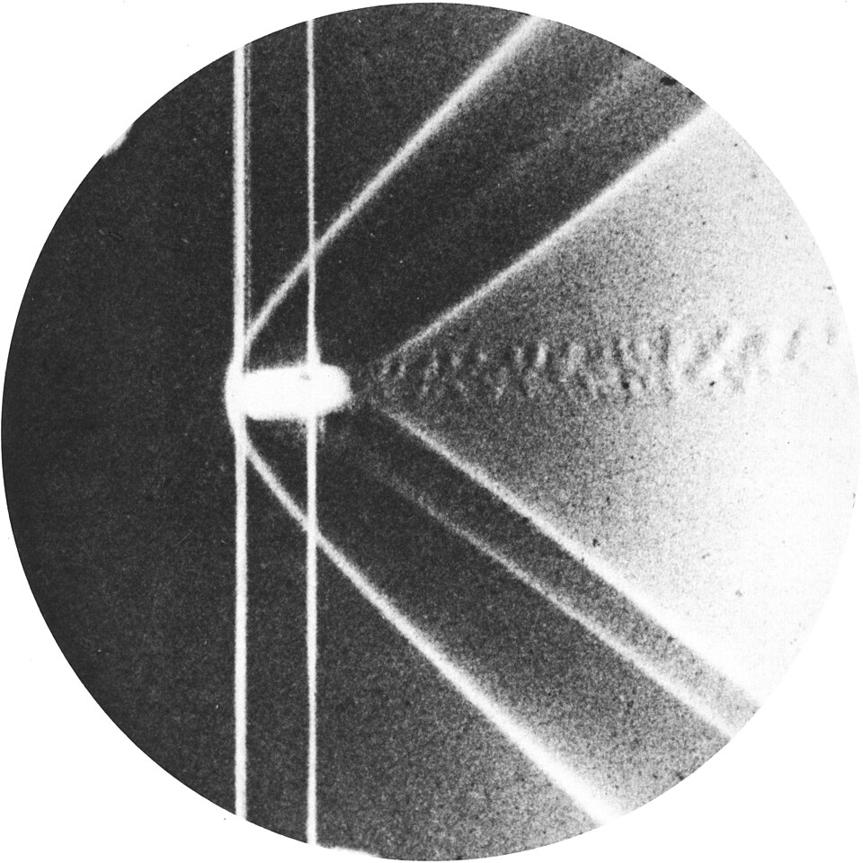
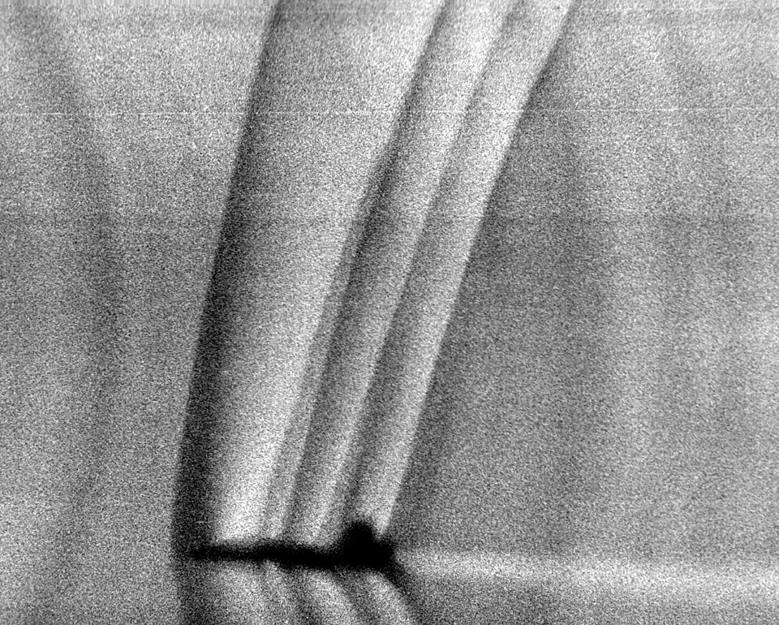

Comparar con el sonido: subsónico, transónico, supersónico e hipersónico
Para la aerodinámica de un avión rápido, lo que importa no es su velocidad en kilómetros por hora, sino cuánto es comparada con la velocidad del sonido. Esa comparación tiene nombre propio: el número de Mach. Por debajo de 1, el aire se comporta de una manera; por encima, de otra completamente distinta.
Según la guía de aeronáutica de la NASA, el número de Mach es el cociente entre la velocidad de un objeto y la velocidad del sonido en el gas que lo rodea [1]:
Se llama así en honor a Ernst Mach, un físico de fines del siglo XIX que estudió la dinámica de los gases [1]. La velocidad del sonido depende del tipo de gas y de su temperatura: cambia con la altura y es distinta en otros planetas, como Marte, cuya atmósfera es sobre todo de dióxido de carbono [1].
Cuando un avión va despacio, el aire lo rodea sin cambiar de densidad. La NASA da una referencia: por debajo de unas 250 millas por hora, unos 400 km/h (un cálculo propio de la conversión), la densidad del aire se mantiene constante [1]. A velocidades mayores, parte de la energía del avión se usa en comprimir el aire, y eso cambia las fuerzas sobre él [1]. Ese efecto de compresibilidad crece con la velocidad, y el número de Mach mide cuánto importa [1]. Más sobre esto en la compresibilidad.
El aviso que no llega: el sonido es la manera en que el aire «avisa» que algo viene. A velocidad subsónica, el aviso viaja más rápido que el avión y el aire de adelante tiene tiempo de apartarse. A velocidad supersónica, el avión llega antes que su propio aviso: el aire no se entera hasta que lo tiene encima, y se comprime de golpe en una onda de choque.
En un flujo supersónico, las perturbaciones chicas solo viajan hacia atrás, dentro de un cono [1]. El ángulo de ese cono, el ángulo de Mach, cumple una relación simple [1]:
Por eso, dice la NASA, en un flujo supersónico no hay influencia hacia adelante [1]. A Mach 2, el cono tiene un ángulo de 30° (un cálculo propio con la fórmula). David Tong, de la Universidad de Cambridge, compara esos conos con los conos de luz de la relatividad: así como ninguna señal viaja más rápido que la luz, en un fluido ninguna perturbación viaja más rápido que la velocidad local del sonido, y por eso hay regiones que «no se enteran» de una perturbación hasta que la onda llega [2].
En el túnel de viento: el número de Mach es un parámetro de semejanza: para que un ensayo en túnel de viento sirva, hay que reproducir el número de Mach del vuelo real [1]. La NASA advierte que es completamente incorrecto medir un coeficiente de arrastre a baja velocidad y aplicarlo a Mach 2, porque la compresibilidad cambia la física [1]. Es la misma idea de las escalas adimensionales.


El número de Mach compara la velocidad de un objeto con la del sonido. Debajo de 1, el aire se aparta a tiempo; cerca de 1, la compresibilidad dispara el arrastre; arriba de 1, aparecen las ondas de choque y el cono de Mach, y más allá de 5, hasta la química del aire cambia. Es el número que ordena toda la aerodinámica de alta velocidad.
Pregunta para la comunidad: La velocidad del sonido baja con la temperatura, y a 10 000 metros de altura el aire es mucho más frío que en el suelo. Un avión que vuela a la misma velocidad en kilómetros por hora, ¿tiene más o menos Mach arriba que abajo?